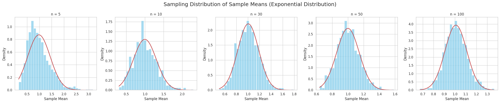
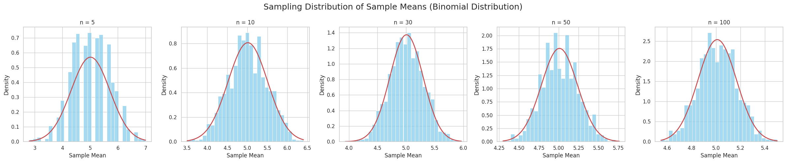
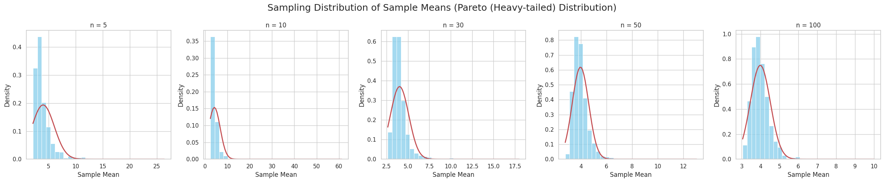
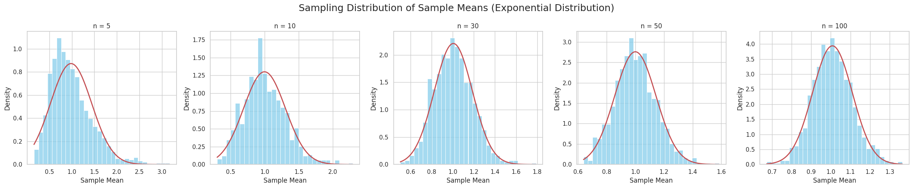
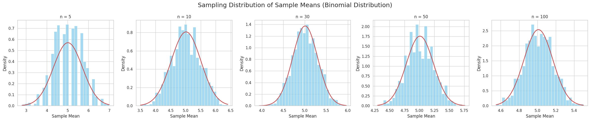
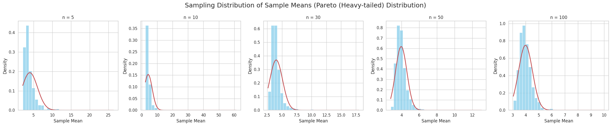

Problem 1: Exploring the Central Limit Theorem through Simulations
Motivation
The Central Limit Theorem (CLT) is a fundamental theorem in probability and statistics. It states:
As the sample size increases, the sampling distribution of the sample mean approaches a normal distribution, regardless of the shape of the original population distribution (provided the population has finite mean and variance).
Mathematically:
If \(X_1, X_2, ..., X_n\) are independent and identically distributed random variables with mean \(\mu\) and variance \(\sigma^2\), then as \(n \to \infty\),
where: - \(\bar{X}_n\) = sample mean, - \(\xrightarrow{d}\) denotes convergence in distribution, - \(\mathcal{N}(0, 1)\) is the standard normal distribution.
The CLT justifies the wide use of normal distribution approximations in inferential statistics.
By simulating different sampling processes, we can visually and numerically observe this convergence!
Task Outline
1. Simulating Sampling Distributions
- Select three different population distributions:
- Uniform Distribution
- Exponential Distribution
-
Binomial Distribution
-
For each distribution:
- Generate a large "population" dataset of size \(100,000\) or more.
- Perform sampling of various sizes.
2. Sampling and Visualization
- For each population:
- Draw random samples of size \(n = 5, 10, 30, 50, 100\).
- Repeat the sampling 1000 times to build distributions of sample means.
- Plot histograms of the sample means.
- Overlay a normal curve for visual comparison.
- Observe convergence to normality.
3. Parameter Exploration
- Explore:
- Different population variances.
- How initial distribution shape affects convergence speed.
- Effect of sample size on variance of the sample mean.
4. Practical Applications
- Discuss:
- Estimation of parameters (means, proportions) from samples.
- Applications in manufacturing, finance, medicine, and machine learning.
Deliverables
- A Markdown document and Python code that:
- Implements all simulations.
- Generates plots showing convergence.
- Includes comparison with true normal distribution.
- Visualizations of sampling distributions for each sample size.
- Discussion on:
- Connection to CLT.
- Impact of sample size and population variance.
Hints and Resources
- Use:
- NumPy for random number generation.
- Matplotlib and Seaborn for beautiful plots.
- SciPy for overlaying theoretical normal curves.
- Start simple (Uniform) before moving to complex distributions (Exponential, heavy-tailed).
- Ensure clear interpretation of sample means and histograms.
Full Python Code
Define Sampling Function
# Define parameters
sample_sizes = [5, 10, 30, 50, 100]
n_samples = 1000 # Number of repetitions
# Helper function to perform sampling and plot results
def simulate_sampling(population, pop_name):
fig, axes = plt.subplots(1, len(sample_sizes), figsize=(24, 5))
fig.suptitle(f'Sampling Distribution of Sample Means ({pop_name})', fontsize=18)
for i, n in enumerate(sample_sizes):
sample_means = []
for _ in range(n_samples):
sample = np.random.choice(population, size=n, replace=True)
sample_means.append(np.mean(sample))
# Plot histogram
sns.histplot(sample_means, kde=False, ax=axes[i], stat="density", color='skyblue', bins=30)
# Fit and plot a normal curve
mu, std = np.mean(sample_means), np.std(sample_means)
x = np.linspace(min(sample_means), max(sample_means), 100)
axes[i].plot(x, norm.pdf(x, mu, std), 'r-', lw=2)
axes[i].set_title(f'n = {n}')
axes[i].set_xlabel('Sample Mean')
axes[i].set_ylabel('Density')
plt.tight_layout()
plt.show()
Generate Populations
# Create large synthetic populations
uniform_pop = np.random.uniform(0, 1, 100000)
exponential_pop = np.random.exponential(scale=1, size=100000)
binomial_pop = np.random.binomial(n=10, p=0.5, size=100000)
Run Simulations
simulate_sampling(uniform_pop, "Uniform Distribution")
simulate_sampling(exponential_pop, "Exponential Distribution")
simulate_sampling(binomial_pop, "Binomial Distribution")
Additional Exploration: Heavy-Tailed Population
# Pareto (heavy-tailed) distribution
pareto_pop = (np.random.pareto(a=2, size=100000) + 1) * 2
simulate_sampling(pareto_pop, "Pareto (Heavy-tailed) Distribution")
 





Example Results and Observations
Uniform Distribution
- Sample means are approximately normal even for \(n=10\).
- Very quick convergence to normality.
Exponential Distribution
- Strongly skewed initially.
- Sample means show right-skew for small \(n\), but become symmetric around \(n \geq 30\).
Binomial Distribution
- Discrete distribution initially.
- Even small sample sizes (\(n=5\)) exhibit approximate normal behavior.
Pareto Distribution
- Very heavy-tailed.
- Slow convergence; large sample sizes (\(n \geq 50\)) needed for decent normal approximation.
Analytical Discussion
Rate of Convergence
- Faster for symmetric distributions (uniform, binomial).
- Slower for skewed/heavy-tailed distributions (exponential, Pareto).
Variance Behavior
- Population variance \(\sigma^2\) affects spread of sample mean distribution.
- Standard error decreases as:
Larger \(n\) \(\rightarrow\) smaller spread of the sample mean distribution.
Importance of Independence
- CLT assumes independent samples.
- Correlated data can violate assumptions and slow convergence.
Practical Considerations
- CLT justifies use of z-tests and t-tests.
- Forms the theoretical backbone for bootstrap methods and confidence intervals.
Key Takeaway:
No matter the original population shape, the distribution of the sample mean becomes approximately normal as sample size increases, given finite variance and independence.
Practical Applications of CLT
| Application Area | Example |
|---|---|
| Manufacturing | Estimating mean product lifespan from samples |
| Finance | Predicting average returns of portfolios |
| Medical Research | Inferring population effects from clinical trial data |
| Machine Learning | Statistical bootstrapping and bagging |
| Quality Control | Monitoring production processes through sample means |
| Epidemiology | Estimating infection rates from health surveys |
Further Exploration Ideas
- Try extremely skewed distributions (e.g., Cauchy).
- Compare sample median versus sample mean behavior.
- Introduce correlation into samples to study breakdown of CLT assumptions.
- Explore the Generalized Central Limit Theorem for infinite variance distributions.
Summary
Through simulation, we've seen the Central Limit Theorem in action:
- Regardless of original population shape (uniform, exponential, binomial, Pareto), the sample mean distribution becomes approximately normal.
- Larger sample sizes yield better approximations.
- The CLT underpins most inferential statistical techniques.
This computational experiment not only strengthens statistical intuition but also showcases why normality assumptions are reasonable in real-world data analysis, supporting decision-making across fields as diverse as manufacturing, finance, epidemiology, and machine learning.